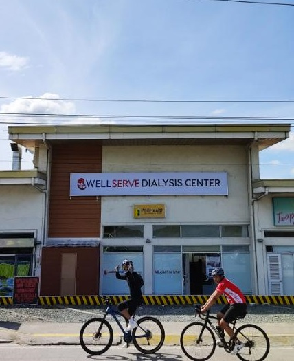
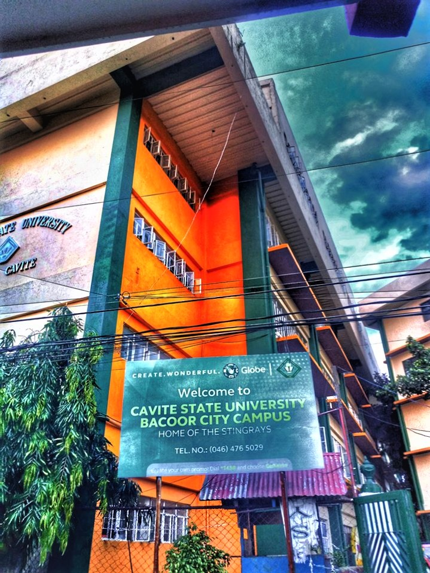

About Me
Hello! I am Keto Rusel Valladores
I am an eager and detail-oriented recent college graduate with a specialization in web and mobile applications. I'm committed to turning imaginative digital concepts into reality. Fueled by a passion for design and a knack for creative problem-solving, I thrive in the dynamic and ever-evolving landscape of technology.
Resume
Training
Education
Professional Skills
Languages
Projects
WellServe Application
Currently in development, the WellServe Application is a project where Keto serves as the front-end developer and software tester. Utilizing Dart and Flutter, this application aims to streamline the scheduling process at WellServe Dialysis Center. The ongoing work reflects Keto's dedication to creating user-friendly solutions that enhance efficiency in healthcare management.

CvSU Alerts App
As the front and back-end developer for the CvSU Alerts App, Keto played a pivotal role in creating a mobile application tailored for CVSU students. Developed using Android Studio and Java, and integrated with Firebase, the app serves as a centralized platform for students to receive timely updates from various school entities, including publications, clubs, and the administration. Keto's contribution displays his knowledge in both front and back-end development.
CvSU Enrollment System
The CvSU Enrollment App, where Keto served as the front-end developer and software tester, is designed to simplify the enrollment process for students at CvSU Bacoor. Leveraging his skills in front-end development, Keto contributed to creating an intuitive interface for students. Additionally, his role as a software tester ensures a seamless and error-free user experience.
